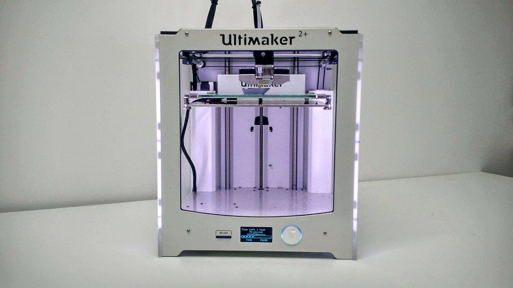

3D Printing
3D printing is the action or process of making a physical object from a three-dimensional digital model, typically by laying down many thin layers of a material in succession. The process of 3D printing is extremely slow, however it is very similar to manufacturing and can be done much easily. The 3D printed prototypes do not have the exact same strength of actual products
Process of 3D Printing
The 3D printing porcess can be broken down in steps as follows
- Start by creating your desired digital 3D models.
- Converting the design into a 3D representable file (.STL)
- Export it to a slicer software , in this case im using cura ultimaker
- Slicing the 3D representable file into layers
- Converting the layers into instructions for the 3D printer (gcode)
- The 3D printer will then create the 3D object.
|  | This is an image of the Ultimaker 2+ machine used in our school's labs for 3D printing. |
3D printing characteristics
- Layer height (extruded filament thickness)
- Wall thickness- Infill percentages
- Bridging and overhangs
- Supports
- Bed adhesion
- Object oreintation
| |
As an example, you can see from the image that you are able to customise the characteristics of your print. |
Laser cutting
Laser cutting is a process where material is placed in the X-Y plane and a LASER (Light Amplification by Stimulated Emission of Radiation) is moved across the profile to be cut out. A laser can be focused to a tight spot, which allows the beam to “cut” at the position. The high intensity of the beam cuts the material.
The workflow for laser cutting
- Firstly, obtain the 2D profile of the object face
- Secondly, export the sketch as DXF
- Next, import the DXF file into CorelDraw
- Make necessary final changes and adjustments
- Lastly, send/print the profile to the lasercutter